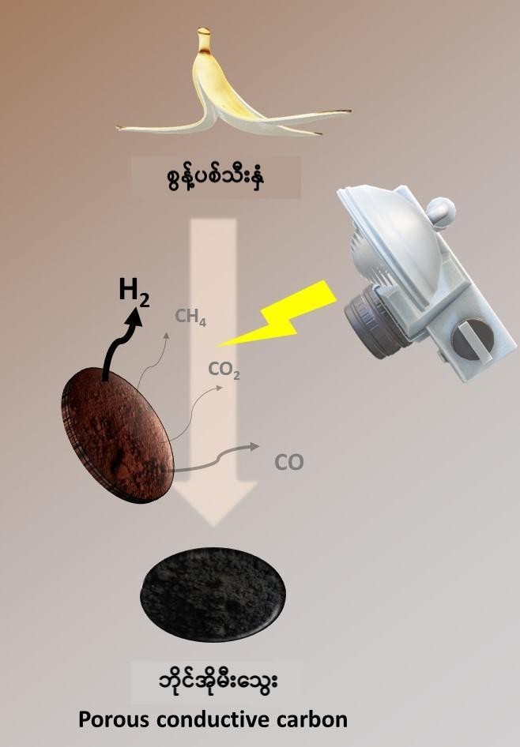

ဒီ ပြဿနာကို အဖြေရှာ နိုင်ဖို့ သိပ္ပံ ပညာရှင် တွေဟာ ပြန်လည် ဖြည့်တင်း နိုင်ပြီး သဘာဝ ပတ်ဝန်းကျင်ကို ထိခိုက်မှု အနည်းဆုံး ဖြစ်မယ့် အစားထိုး သဘာဝ လောင်စာ တွေကို ရှာဖွေလျှက် ရှိကြပါတယ်။
ဒီ အစားထိုး လောင်စာတွေ ထဲမှာ ထိပ်ဆုံးက ပြေးနေတာ ကတော့ ဟိုက်ဒြိုဂျင် ဓါတ်ငွေ့ပဲ ဖြစ်ပါတယ်။ အထူးသဖြင့် စားကြွင်း စားကျန် နဲ့ ဟင်းသီးဟင်းရွက် အကြွင်း အကျန် တွေလို သက်ရှိ စွန့်ပစ် ပစ္စည်း တွေကနေ ထုတ်ယူတဲ့ ဟိုက်ဒြိုဂျင် ဓါတ်ငွေ့ဟာ စွန့်ပစ် ပစ္စည်း တွေ ရှင်းလင်းရတဲ့ ပြဿနာကို တနည်း တလမ်း ပြေလည်စေမှာ ဖြစ်ပါတယ်။
ဒါ့အပြင် ဟိုက်ဒြိုဂျင်ဟာ လောင်ကြွမ်းပြီးရင် ရေ ဖြစ်သွားတာမို့ သန့်ရှင်းပြီး သဘာဝ ပတ်ဝန်းကျင် ထိခိုက် မှုလဲ မရှိနိုင် ပါဘူး။
ဒါပေမယ့် ဒီနေရာမှာ ကြုံတွေ့ရတဲ့ အခက်အခဲ ကတော့ ဒီ သက်ရှိ စွန့်ပစ် ပစ္စည်း တွေကနေ ဟိုက်ဒြိုဂျင်ကို ဈေးသက်သက်သာသာ မြန်မြန် ဆန်ဆန် နဲ့ ပေါပေါများများ ထုတ်လုပ်နိုင်မယ့် နည်းလမ်းပဲ ဖြစ်ပါတယ်။
လက်ရှိ အချိန်မှာ သက်ရှိ စွန့်ပစ် ပစ္စည်း တွေကနေ လောင်စာ ဓါတ်ငွေ့ကို စီးပွားဖြစ် ထုတ်ယူရာမှာ နည်းလမ်း နှစ်ခုကို အသုံးချနေ ကြပါတယ်။
ပထမ နည်းလမ်းကတော့ သဘာဝ စွန့်ပစ် ပစ္စည်းကို ဓါတ်ငွေ့အဖြစ် ပြောင်းလဲတဲ့ နည်းလမ်း ဖြစ်ပါတယ်။ ဒီနည်းလမ်းမှာ သဘာဝ စွန့်ပစ် ပစ္စည်းတွေကို အပူချိန် ဒီဂရီ စင်တီဂရိတ် ၁၀၀၀ လောက်ထိ အပူပေးပြီး ဓါတ်ငွေ့ ထုတ်ယူတဲ့ နည်းလမ်း ဖြစ်ပါတယ်။
ဒီလို ရလာတဲ့ ဓါတ်ငွေ့ကို “syngas” လို့ ခေါ်ပါတယ်။ ဒါပေမယ့် ဒီ ဓါတ်ငွေ့ဟာ ဟိုက်ဒြိုဂျင် သီးသန့် မဟုတ်ပဲ ဟိုက်ဒြိုဂျင်၊ မိသိန်း နဲ့ ကာဗွန်ဒိုင် အောက်ဆိုဒ် တွေ ရောနေတဲ့ ဓါတ်ငွေ့ အရော တစ်မျိုး ဖြစ်ပါတယ်။
ဒုတိယ နည်းလမ်းကတော့ pyrolysis လို့ ခေါ်တဲ့ နည်းလမ်း ဖြစ်ပါတယ်။ ဒီနည်းမှာတော့ သဘာဝ စွန့်ပစ် ပစ္စည်း တွေကို အပူချိန် ၅၀၀ ကနေ ၈၀၀ ဒီဂရီ စင်တီဂရိတ် လောက် အပူ ပေးထားပါတယ်။ ဒီ ပစ္စည်း တွေကို ကမ္ဘာ့ လေထုထက် ၅ ဆ လောက် ပို ဖိအားများတဲ့ လေလုံးခန်း အတွင်း အပူပေး ခြင်းအားဖြင့် ဓါတ်ငွေ့ ထုတ်ယူတဲ့ နည်းလမ်း ဖြစ်ပါတယ်။
ယခုအခါ ဆွစ်ဇာလန် နိုင်ငံက သိပ္ပံ ပညာရှင် တွေဟာ ငှက်ပျောသီး အခွံကို အသုံးချပြီး သန့်ရှင်းတဲ့ ဟိုက်ဒြိုဂျင် ဓါတ်ငွေ့ လောင်စာ ထုတ်ယူနိုင်မယ့် နည်းလမ်းကို ရှာဖွေ တွေ့ရှိ ခဲ့ကြပါတယ်။ သုတေသီ တွေက အခု နည်းလမ်းကို ဓါတုဗေဒ သုတေသန ဂျာနယ် တစ်စောင် ဖြစ်တဲ့ Chemical Science သုတေသန ဂျာနယ်မှာ တင်ပြခဲ့ ကြပါတယ်။
အခု နည်းလမ်းမှာ ဇီနွန် ဓါတ်မီးကို အသုံးချပြီး ဓါတ်ငွေ့ထုတ်တဲ့ နည်းလမ်းကို ဖော်ထုတ်နိုင် ခဲ့ကြပါတယ်။ ဒီ ဇီနွန် ဓါတ်မီးဟာ အင်အား ပြင်းတဲ့ အလင်းကို ထုတ်ပေးနိုင်ပါတယ်။ ဒီ အားပြင်း အလင်းကို ငှက်ပျောခွံက ဆဲလ်တွေက စုပ်ယူပြီးတဲ့နောက် ငှက်ပျောခွံ အတွင်းမှာ အလင်းကနေ အပူအဖြစ် ပြောင်းသွားပါတယ်။
ဒီ ဖြစ်စဉ်ကနေ ရရှိတဲ့ အကျိုးဆက် ကတော့ ဒီ အပူကြောင့် ငှက်ပျောခွံ အတွင်း ဓါတ်ပြောင်းလဲမှု ဖြစ်ပြီး သဘာဝ ဓါတ်ငွေ့တွေ ထွက်လာတာပဲ ဖြစ်ပါတယ်။
သုတေသီ တွေဟာ သဘာဝ သက်ရှိ စွန့်ပစ်ပစ္စည်း မျိုးစုံကန ဒီနည်းနဲ့ ဓါတ်ငွေ့ထုတ်ဖို့ စမ်းသပ် ခဲ့ ကြပါတယ်။ သူတို့ စမ်းသပ်ခဲ့တဲ့ အထဲမှာ ငှက်ပျောခွံ၊ ပြောင်းဖူးရိုး၊ လိမ္မော်ခွံ၊ ကာဖီစေ့ နဲ့ အုံးခွံတွေ ပါဝင် ပါတယ်။
ဒီ စွန့်ပစ် ပစ္စည်း တွေကို ပထမဆုံး အပူချိန် ၁၀၅ ဒီဂရီ စင်တီဂရိတ်မှာ ၂၄ နာရီ ထားပြီး အခြောက် ခံပါတယ်။ ပြီးတဲ့နောက် အမှုန့် ညက်ညက် ဖြစ်သွားအောင် ကြိတ်လိုက် ပါတယ်။ ဒီ ရလာတဲ့ အမှုန့် တွေကို ဓါတ်ပြုခန်းထဲ ထည့်လိုက်ပါတယ်။
ဓါတ်ပြုခန်း ထဲက အမှုန့်တွေကို အားကောင်းတဲ့ ဇီနွန် မီးနဲ့ ခဏတာ ထိုးလိုက်ပါတယ်။ ဒီအခါ ဒီမီး ကြောင့် တခန အတွင်းမှာ အမှုန်ံတွေ ကနေ ဟိုက်ဒြိုဂျင် ဓါတ်ငွေ့တွေ ထွက်လာပါတယ်။

ဒီ ဖြစ်စဉ်မှာ ဘေးထွက် ပစ္စည်း အနေနဲ့ မီးသွေးမှုန့် ၃၃၀ ဂရမ်ခန့် ကျန်ရှိမှာ ဖြစ်ပါတယ်။ ဒီ မီးသွေး မှုန့်တွေကို အခြား စက်မှု လုပ်ငန်း တွေမှာ ပြန်လည် အသုံးချ နိုင်မှာ ဖြစ်ပါတယ်။
ဒီ ဟိုက်ဒြိုဂျင် ထုတ်ယူတဲ့ ဖြစ်စဉ်မှာ ထွက်လာတဲ့ ဟိုက်ဒြိုဂျင်ရဲ့ စွမ်းအင် ပမာဏဟာ သူ့ကို ထုတ်ဖို့ အသုံးပြုရတဲ့ ဇီနွန် ဓါတ်မီးက သုံးစွဲတဲ့ စွမ်းအင် ပမာဏထက် သိသိ သာသာ ပိုများပါတယ်။ အတိအကျ ပြောရရင် အခွံ ၁ ကီလိုဂရမ် ကနေ စွမ်းအင်ပမာဏ ၄.၀၉ MJ (MJ = mega joules = 1,000,000 joules) ထွက်ရှိမှာ ဖြစ်ပါတယ်။ ဒီ ပမာဏဟာ လျှပ်စစ် စွမ်းအင် ၁ ကီလိုဝပ် နာရီ ခန့်နဲ့ ညီမျှ တဲ့ စွမ်းအင် ဖြစ်ပါတယ်။
ဒီ ထုတ်လုပ်နည်းရဲ့ အရေးပါတဲ့ အချက်ကတော့ ထွက်ရှိလာတဲ့ ဟိုက်ဒြိုဂျင် ဓါတ်ငွေ့ရော ကာဗွန် မီးသွေးရော နှစ်ခု လုံးဟာ စက်မှု လုပ်ငန်း တွေအတွက် အသုံးဝင် တာပဲ ဖြစ်ပါတယ်။
ဟိုက်ဒြိုဂျင်ဟာ သန့်ရှင်းတဲ့ လောင်စာ ဖြစ်တာမို့ သူ့ကို လောင်ကျွမ်းပြီး လေထု ညစ်ညမ်းမှု မရှိပဲ လျှပ်စစ်ဓါတ် ထုတ်ပေး နိုင်ပါတယ်။ ကာဗွန် မီးသွေး ကိုတော့ သဘာဝ မြေဩဇာ အဖြစ် ဖြစ်စေ၊ လျှပ်စစ် ပစ္စည်းတွေ ထုတ်လုပ်ရာမှာ ဖြစ်စေ ပြန် အသုံး ပြုနိုင် ပါတယ်။
Ref: Getting hydrogen out of banana peels | EPFL